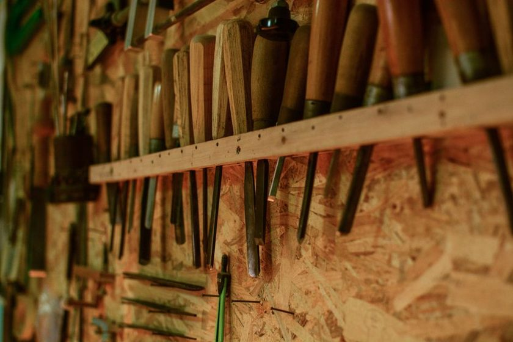

What a Missing Outline Actually Costs

At twenty to ten on a Tuesday the small hammer is not on the wall. You find that out mid-task, one hand flat on a workpiece, the other reaching into a shape that turns out to be paint. The outline is doing its job perfectly — it is telling you, instantly and without argument, that something is gone. What the hammer costs to replace is a number anyone can look up in a minute. What the gap costs is harder to see, because it never arrives as a single bill with a date on it. It arrives in five-minute pieces, spread across other people's afternoons, and it ends up somewhere far less tidy than a ledger.
The receipt is the smallest line
Replacement price is the easy part of this, which is exactly why it gets treated as the whole part. It is one figure, paid once, out of one budget, and it closes. Somebody orders the thing, the thing arrives, the folder gets a receipt in it. Done.
Everything else about the gap resists that treatment. It has no invoice, no owner, and no moment where it visibly ends. It is paid in fragments by people who would never think to record them. That is what makes it expensive — not size, but invisibility. A cost you can name gets managed. A cost that dissolves into ordinary friction just becomes what the shop is like.
The interruption nobody logs
In six square metres the walk to the wall is nothing. Three steps, maybe four. The walk is not what the gap takes from you. What it takes is the state you were holding when you started walking — the sequence in your head, the piece aligned, the reason you chose this order of operations in the first place.
Watch what actually happens when the shape is empty:
- You look again, because the first look is never believed.
- You check the two or three places it plausibly went — bench top, offcut bin, the pocket of the apron you were wearing yesterday.
- You open a drawer, which is its own detour, since a drawer answers questions slowly.
- You ask someone, which interrupts a second person to resolve a first person's problem.
- You come back and rebuild whatever you were holding in your head before the reach.
Any one of those is trivial. The multiplication is not. A single gap tends to be paid for repeatedly — once by every person who walks to that spot expecting the tool to be there, until someone finally names it out loud or the end-of-day count catches it. The count is what puts a ceiling on the multiplication. Without it, the gap keeps charging rent.
A missing tool costs whatever the next five people do about it — and not one of them will write it down.
What gets used instead
The most expensive thing about the gap is rarely the search. It is the shrug that ends the search. Nobody has time to keep looking, so the work continues with whatever is within arm's reach: pliers turning a fastener that wanted a wrench, a chisel levering something it was never ground to lever, a screwdriver doing duty as a scraper.
That substitution charges twice. The job comes out slightly worse — a rounded corner, a bruised edge, a joint that needed a little more persuasion than it should have. And the substitute tool ages faster than it deserved to, so the next person to need it for its actual purpose meets a duller, looser, less honest version of it. This is where the shape of the loss changes character. A single absence quietly starts producing more absences.
It is also why the outline earns its paint. An outline does not merely store the tool; it makes substitution visible as a decision rather than a drift. When the spot is empty and shaped, reaching past it is a choice you can see yourself making. That legibility is the whole argument behind drawing the shape rather than writing the name.
Where the cost tends to land
Rough shape of it, without pretending to know the magnitude — that varies with how busy the bench is and how many hands share it:
| Where it lands | What it looks like on the floor | Why it stays invisible |
|---|---|---|
| Replacement | An order, a receipt, a new tool on the hook | It doesn't — this is the only visible one |
| Interruption | Repeated searching, asking, restarting a train of thought | Each instance is too small to feel worth reporting |
| Substitution | Rounded fasteners, bruised edges, a chisel used as a lever | The damage shows up on a different tool, later |
| Verification | People checking the drawer before trusting the wall | It reads as diligence rather than as overhead |
| Trust | Private stashes, duplicate purchases, tools kept in aprons | Nobody decides it; everyone just adapts |
The wall that might be wrong
The last two rows are the ones worth losing sleep over. A wall works because it makes a promise: what is drawn here is here. The moment that promise is unreliable, everyone downstream starts hedging. They check before they trust. They keep a second one in a pocket, just in case. They stop putting their own tools back on the wall, because a wall that might be wrong is not somewhere you want to leave something you care about.
That is the quiet end state — outlines as decoration. The paint stays; the meaning drains out of it. And at that point every advantage of an open wall over a closed drawer disappears, because the drawer was never the real problem. The problem was always the delay between a thing going missing and anyone knowing. An untrusted wall reintroduces exactly that delay, with none of the drawer's honesty about being opaque.
The count is not accounting
It would be easy to read a nightly count as inventory control — a small audit, a shrinkage figure, a way of finding out who to be annoyed with. That framing tends to kill the habit within a month, because nobody wants to run a tribunal at closing time.
The count is maintenance on the promise. Its output is not a number; it is the fact that tomorrow morning the wall is still true. Someone glances along the shapes, notices the empty one, says the tool's name out loud, and the gap stops being a private surprise waiting for four separate people to discover independently. Two minutes of looking buys a day of reaching without checking.
Which reframes the whole question. What a missing outline costs is not the tool. It is a small tax on every reach until someone notices, plus a slow discount applied to how much anyone believes the room. The count is how you keep paying that down — not to protect the inventory, but to protect the only thing that makes a wall better than a box.
A note on this piece
This is an editorial observation about how shared tool storage tends to behave, written from bench practice rather than measurement. No figures here are presented as verified data, and different shops will find different parts of this expensive. Treat it as a way of looking at your own wall, not as a recommendation for how to run it.
Read also
- Six Square Metres and a Count — how the room and the habit were arranged in the first place.
- Painted Outlines Versus Labels — why a silhouette reads faster than a word.
- Tool Crib Etiquette — what shared storage asks of the people using it.